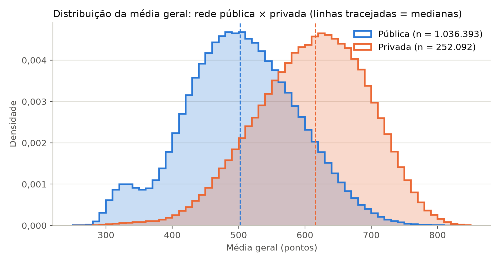

Desigualdades no ENEM 2025: Rede de Ensino, Território e Perfil Socioeconômico
Victor Hugo Nespoli
Bacharelado em Sistemas de Informação — Centro Universitário La Salle do Rio de Janeiro (UNILASALLE-RJ)
Disciplina: Linguagem de Programação (Análise e Visualização de Dados com Python) · 6º Período · 2026/2
Resumo
O Exame Nacional do Ensino Médio (ENEM) é a principal via de acesso ao ensino superior no Brasil, e seus microdados permitem examinar como as desigualdades educacionais se expressam no desempenho dos estudantes. Este estudo analisa os Microdados do ENEM 2025, divulgados pelo INEP, que abrangem 4.810.772 inscritos, para responder a três perguntas: como o desempenho varia entre redes de ensino e territórios; qual é a associação entre o perfil socioeconômico dos inscritos e o desempenho municipal; e onde se concentra a abstenção. Desenvolveu-se um pipeline determinístico em Python (pandas e PyArrow) que lê os arquivos brutos em blocos, trata valores ausentes e cria métricas derivadas. Como as bases de participantes e de resultados não possuem chave de ligação, a integração foi feita de forma agregada, pelo município de aplicação da prova. Entre os concluintes de 2025, a média geral da rede privada (610,5 pontos) superou a da rede estadual (497,1) em 113 pontos (d de Cohen = 1,36), e a maior distância ocorreu na redação. No nível municipal, a proporção de inscritos de baixa renda explica 71% da variação da média geral (ρ = −0,86). A abstenção atingiu 27,7% dos inscritos, chegou a 40,0% no Amazonas e foi cerca de cinco vezes maior entre concluintes da rede estadual do que da privada. Os resultados indicam que a origem socioeconômica e escolar continua determinante no exame e apontam a abstenção como dimensão adicional da desigualdade.
Palavras-chave: ENEM 2025; Desigualdade educacional; Microdados do INEP; Análise exploratória de dados; Python; Princípios FAIR.
1. Introdução
Desde a reformulação de 2009, o ENEM deixou de ser apenas um instrumento de autoavaliação e passou a selecionar estudantes para universidades públicas, por meio do Sistema de Seleção Unificada (SiSU), e para programas de financiamento estudantil. A nota obtida no exame, portanto, condiciona trajetórias educacionais e profissionais. Se o desempenho reflete, em grande medida, as condições de origem dos participantes, o exame tende a reproduzir desigualdades preexistentes, fenômeno documentado desde o clássico Relatório Coleman (COLEMAN et al., 1966).
O INEP disponibiliza anualmente os microdados do exame como dados abertos. Desde a edição de 2024, por exigência da Lei Geral de Proteção de Dados (BRASIL, 2018), as informações socioeconômicas dos inscritos e as notas são publicadas em arquivos separados e sem chave de ligação entre eles (INEP, 2026b). Essa decisão protege os participantes, mas impede análises no nível individual que relacionem renda e nota, o que exige do analista uma estratégia metodológica alternativa.
Este trabalho constrói um pipeline reprodutível em Python para explorar a edição de 2025 e responder às seguintes perguntas de pesquisa:
2. Metodologia e Pipeline de Dados
2.1 Fonte primária e granularidade
Utilizaram-se os Microdados do ENEM 2025 (INEP, 2026a), publicados em abril de 2026. O conjunto contém três bases em formato CSV:
RESULTADOS_2025.csv(2,1 GB): uma linha por inscrito, com presença, notas das quatro provas objetivas e da redação e dados da escola de conclusão do ensino médio;PARTICIPANTES_2025.csv(513 MB): uma linha por inscrito, com faixa etária, sexo, cor/raça e as 23 questões do questionário socioeconômico;ITENS_PROVA_2025.csv(357 KB): uma linha por item e caderno, com gabarito e parâmetros da Teoria de Resposta ao Item (TRI).
As duas bases principais têm exatamente 4.810.772 registros. Os dados da escola (rede e localização) estão disponíveis apenas para os inscritos identificados no Censo Escolar 2025 como possíveis concluintes do ensino médio (INEP, 2026b). Os egressos e os treineiros, por isso, não têm escola vinculada.
2.2 Leitura de arquivos não triviais
Os arquivos usam codificação Latin-1 (e não UTF-8) e separador ponto e vírgula, e o arquivo de resultados não cabe confortavelmente na memória se for lido por inteiro. A função de extração lê apenas as colunas necessárias, com tipos primitivos explícitos, em blocos de 500 mil linhas:
def ler_csv_inep(caminho: Path, colunas: dict[str, str],
tamanho_bloco: int = 500_000) -> pd.DataFrame:
"""Lê um CSV dos microdados do INEP em blocos, apenas com as colunas pedidas."""
leitor = pd.read_csv(
caminho, sep=";", encoding="latin-1",
usecols=list(colunas), dtype=colunas, # ex.: {"NU_NOTA_MT": "float32"}
na_values=[""], keep_default_na=False,
chunksize=tamanho_bloco,
)
return pd.concat(leitor, ignore_index=True)Das 70 colunas do arquivo de resultados, apenas 22 são lidas. Os vetores de respostas e de gabaritos, que concentram a maior parte do volume, são descartados. A tipagem em float32 e int8 e a conversão de textos repetidos em category reduzem o consumo de memória. A base tratada, no nível do participante, ocupa 84 MB em Parquet com compressão Zstandard, contra 2,1 GB do CSV original. O pipeline completo é executado em cerca de 20 segundos.
2.3 Tratamento de valores ausentes e métricas derivadas
Nota ausente não é um erro de coleta: ela indica que o inscrito faltou (código 0) ou foi eliminado (código 2). Por isso, nenhuma nota foi imputada. Definiu-se como participante válido aquele presente nas quatro provas objetivas e com nota de redação registrada (3.244.348 inscritos, ou 67,4%). Redações com problemas (em branco, fuga ao tema, cópia do texto motivador etc.) recebem nota zero do próprio INEP e foram mantidas, já que fazem parte do resultado oficial. As métricas derivadas são:
pres = df[["TP_PRESENCA_CN", "TP_PRESENCA_CH", "TP_PRESENCA_LC", "TP_PRESENCA_MT"]]
df["IN_FALTOU_DIA1"] = (df["TP_PRESENCA_LC"] == 0) & (df["TP_PRESENCA_CH"] == 0)
df["IN_FALTOU_DIA2"] = (df["TP_PRESENCA_CN"] == 0) & (df["TP_PRESENCA_MT"] == 0)
df["IN_AUSENTE_TOTAL"] = df["IN_FALTOU_DIA1"] & df["IN_FALTOU_DIA2"]
df["IN_VALIDO"] = (pres == 1).all(axis=1) & df["NU_NOTA_REDACAO"].notna()
# Média simples das quatro objetivas e da redação (pesos iguais)
notas = df[["NU_NOTA_CN", "NU_NOTA_CH", "NU_NOTA_LC", "NU_NOTA_MT", "NU_NOTA_REDACAO"]]
df["NU_MEDIA_GERAL"] = notas.mean(axis=1).where(df["IN_VALIDO"])Na base de participantes, a renda familiar é informada em 17 faixas (questão Q007). Estimou-se a renda familiar per capita dividindo o ponto médio de cada faixa pelo número de moradores (Q005). Para a faixa aberta, acima de R$ 30.360,00, adotou-se o limite inferior acrescido de 25%. Considerou-se de baixa renda o inscrito com renda per capita de até meio salário mínimo (R$ 759,00). Também foram criados indicadores binários de mãe sem ensino médio completo, ausência de internet e de computador no domicílio, conclusão do ensino médio apenas em escola pública e autodeclaração como preto, pardo ou indígena (PPI). Respostas do tipo "não sei" e "não declarado" foram tratadas como ausentes, para não distorcer as proporções.
2.4 Integração ecológica pelo município de prova
Como as bases não podem ser cruzadas indivíduo a indivíduo, cada uma foi agregada pelo código IBGE do município de aplicação da prova (CO_MUNICIPIO_PROVA), variável presente em ambas. A junção foi validada como 1:1:
def integrar_municipios(res_mun, part_mun):
mun = res_mun.merge(part_mun, on="CO_MUNICIPIO_PROVA",
how="inner", validate="one_to_one")
mun["RAZAO_INSCRITOS"] = mun["N_INSCRITOS_RES"] / mun["N_INSCRITOS_PART"]
return munA razão entre o número de inscritos nas duas bases foi exatamente 1,0 em todos os 1.805 municípios, o que confirma a consistência do agrupamento. Para a RQ2 e parte da RQ3, consideraram-se os 1.787 municípios com pelo menos 100 participantes válidos, que reúnem 99,97% deles. Esse recorte evita médias instáveis em municípios muito pequenos. Correlações nesse nível são ecológicas: descrevem municípios, e não indivíduos (ROBINSON, 1950).
2.5 Análise estatística e visualização
Calcularam-se medidas de posição (média, mediana e quartis), de dispersão (desvio-padrão, coeficiente de variação e amplitude interquartil) e de forma (assimetria), além da proporção de outliers pelo critério de 1,5 × AIQ. Com milhões de observações, qualquer diferença é estatisticamente significativa. Por isso, a magnitude das diferenças entre grupos foi avaliada pelo d de Cohen (COHEN, 1988), e não por valores-p. As associações foram medidas pelas correlações de Pearson e Spearman, e a relação principal da RQ2, por regressão linear simples (mínimos quadrados ordinários). Os gráficos interativos foram produzidos com Plotly e a figura estática, com Matplotlib. As cores identificam sempre a mesma rede de ensino em todas as figuras, com paleta verificada para leitura por pessoas com daltonismo.
3. Resultados e Discussão Visual
A média geral dos 3,24 milhões de participantes válidos foi de 531,7 pontos (desvio-padrão de 93,5; mediana de 527,3), com distribuição praticamente simétrica (assimetria de 0,11) e apenas 0,29% de valores atípicos pelo critério da AIQ. Os grupos analisados a seguir, porém, se distribuem de forma muito desigual em torno desse centro.
3.1 RQ1: Rede de ensino e território
Entre os 1.288.485 concluintes válidos com escola identificada, a hierarquia entre as redes é nítida (Tabela 1 e Figura 1). A rede privada obteve a maior média (610,5), seguida pela federal (583,5), pela municipal (540,0) e pela estadual (497,1), que concentra 74,6% desses estudantes. A diferença entre privada e estadual, de 113,4 pontos, corresponde a um d de Cohen de 1,36, efeito considerado muito grande. A rede federal, também pública, ficou a apenas 27 pontos da privada (d = 1,04 em relação à estadual). Esse resultado é compatível com o processo seletivo de ingresso e com as melhores condições de infraestrutura e de carreira docente dos institutos federais.
Tabela 1 — Média geral por rede da escola de conclusão (concluintes 2025, participantes válidos).
| Rede | n | Média | Mediana | Desvio-padrão | Q1 | Q3 |
|---|---|---|---|---|---|---|
| Estadual | 961.328 | 497,1 | 496,9 | 83,0 | 442,7 | 553,8 |
| Municipal | 6.602 | 540,0 | 540,5 | 77,8 | 487,0 | 594,4 |
| Federal | 68.463 | 583,5 | 587,4 | 81,5 | 529,4 | 641,6 |
| Privada | 252.092 | 610,5 | 615,6 | 83,7 | 554,6 | 671,3 |
A Figura 2 agrupa as redes federal, estadual e municipal como "pública". O terceiro quartil da rede pública (561 pontos) fica abaixo da mediana da rede privada (616 pontos): 90% dos concluintes da escola pública ficam abaixo do estudante típico da escola privada. A distribuição pública mostra ainda uma segunda concentração, por volta de 340 pontos, formada por participantes que tiveram a redação zerada. Entre todos os participantes válidos, esses casos somam 171.337 (5,3%). A taxa de redação zerada chega a 7,8% entre os concluintes da rede pública, contra 1,0% na privada.

A distância varia conforme a área do conhecimento (Figura 3). Ela é maior na redação (733,5 na privada contra 536,1 na estadual, ou 197 pontos) e em Matemática (140 pontos), e menor em Linguagens e Códigos (69 pontos). A redação depende de prática orientada e de correção individualizada, recursos mais escassos em turmas numerosas, o que ajuda a explicar a amplitude dessa diferença.
Em relação ao território, os concluintes de escolas urbanas obtiveram média de 526,2, contra 483,3 nas rurais: uma diferença de 42,9 pontos e efeito moderado (d = 0,45). Entre as UFs (Figura 4), a distância entre privada e estadual vai de 88 pontos no Paraná e em São Paulo a 147 pontos no Piauí, com Amazonas (132) e Alagoas (131) em seguida. A variação decorre sobretudo da rede estadual, cuja média oscila entre 456,3 (AL) e 522,6 (RS), enquanto as médias da rede privada ficam em uma faixa mais estreita, de 574 a 639 pontos. Nos estados do Sul e em São Paulo, a menor distância reflete uma rede pública mais forte, e não uma rede privada mais fraca.
3.2 RQ2: Perfil socioeconômico e desempenho municipal
O perfil dos inscritos no ENEM 2025 é majoritariamente popular: 64,8% têm renda per capita de até meio salário mínimo (a mediana nacional é de R$ 474,38), 77,1% cursaram o ensino médio apenas em escola pública, 58,6% se autodeclaram pretos, pardos ou indígenas, 52,1% não têm computador em casa e 38,2% têm mãe sem ensino médio completo.
No nível municipal, a associação entre esse perfil e o desempenho é forte (Figura 5). A proporção de inscritos de baixa renda tem correlação de Spearman de −0,86 com a média geral, e a reta de regressão explica 71% da variação entre municípios (R² = 0,71). A cada 10 pontos percentuais a mais de inscritos de baixa renda, a média municipal cai, em média, 13,9 pontos. Nos extremos, Tonantins (AM), com 98% de inscritos de baixa renda, tem média de 396,7, enquanto Veranópolis (RS), com 27%, alcança 605,8.
A matriz de correlação (Figura 6) mostra que os indicadores socioeconômicos são fortemente correlacionados entre si e que a ausência de computador no domicílio é o indicador mais associado ao desempenho (ρ = −0,89). Em seguida vêm a renda per capita mediana (+0,86), a proporção de baixa renda (−0,86), a falta de internet (−0,85) e a proporção de inscritos PPI (−0,84). Como esses indicadores são quase colineares (ρ entre eles de até 0,98), não é possível isolar o efeito de cada um com dados agregados. Eles devem ser lidos como facetas de uma mesma condição socioeconômica.
A associação também aparece dentro de cada região (Tabela 2), o que afasta a hipótese de que ela seja apenas um efeito da diferença entre Norte/Nordeste e Sul/Sudeste. Ela é mais fraca no Centro-Oeste (ρ = −0,52) e no Nordeste (ρ = −0,67). No Nordeste, a proporção de baixa renda é alta e pouco variável entre municípios (mediana de 90%), o que restringe a amplitude do indicador e atenua a correlação.
Tabela 2 — Correlação de Spearman entre % de baixa renda e média geral, por região (municípios com ≥ 100 participantes válidos).
| Região | Municípios | ρ de Spearman | % baixa renda (mediana) | Média geral (mediana) |
|---|---|---|---|---|
| Sudeste | 492 | −0,83 | 55,3% | 545,2 |
| Norte | 231 | −0,81 | 88,0% | 474,0 |
| Sul | 252 | −0,81 | 45,9% | 538,8 |
| Nordeste | 654 | −0,67 | 90,3% | 496,9 |
| Centro-Oeste | 158 | −0,52 | 63,0% | 509,6 |
3.3 RQ3: Abstenção
Dos 4,81 milhões de inscritos, 27,7% faltaram aos dois dias de prova. A falta foi maior no segundo dia (32,2%) do que no primeiro (28,0%), padrão compatível com a desistência de quem considera ter ido mal no primeiro domingo. Entre as UFs (Figura 7), a abstenção é marcadamente mais alta na Região Norte, com 40,0% no Amazonas, 35,3% em Roraima e 34,0% no Acre, além de Mato Grosso (35,3%). As menores taxas estão no Nordeste: Ceará (21,2%), Sergipe (23,1%) e Rio Grande do Norte (23,9%). Esse padrão sugere a influência das distâncias até os locais de prova e das dificuldades de deslocamento.
O vínculo escolar diferencia fortemente a abstenção (Figura 8). Entre os concluintes das redes privada e federal, apenas 5,5% e 5,8% faltaram, contra 26,0% na rede estadual, quase cinco vezes mais. A maior taxa (31,0%) está entre os inscritos sem escola vinculada, grupo formado por egressos e treineiros. Assim, a desigualdade se manifesta antes mesmo da prova: parte expressiva dos estudantes da rede estadual nem chega a ser avaliada.
Curiosamente, no nível municipal, a abstenção quase não se associa aos indicadores socioeconômicos (|ρ| ≤ 0,17; Figura 6). A relação mais forte é com a proporção de treineiros (ρ = −0,49; Figura 9): municípios com mais inscritos treineiros têm abstenção menor. O contraste com a Figura 8 indica que a abstenção depende mais da situação escolar do inscrito e da geografia regional do que da renda média do município, o que reforça a cautela contra a falácia ecológica.
4. Conclusão
A análise dos microdados do ENEM 2025 mostra que o desempenho no exame acompanha de perto a origem escolar e socioeconômica dos participantes. Quanto à RQ1, a rede privada supera a estadual em 113 pontos de média geral (d = 1,36), com distância máxima na redação. Essa diferença varia de 88 a 147 pontos entre as UFs, conforme a qualidade relativa da rede estadual, e a rede federal se aproxima da privada. Quanto à RQ2, a proporção de inscritos de baixa renda explica 71% da variação do desempenho entre municípios, e a associação permanece forte dentro de todas as regiões. Quanto à RQ3, mais de um quarto dos inscritos faltou às provas, com taxas maiores na Região Norte e cerca de cinco vezes maiores entre concluintes da rede estadual do que da privada.
Limitações. (i) As correlações da RQ2 e da RQ3 são ecológicas e não autorizam inferências sobre indivíduos. (ii) A rede de ensino só está disponível para os concluintes identificados no Censo Escolar (39,7% dos participantes válidos). (iii) A renda per capita é uma estimativa obtida pelo ponto médio das faixas. (iv) O município de prova nem sempre coincide com o de residência. (v) A média simples das cinco provas é uma convenção, já que cada área tem escala própria na TRI. (vi) A base de resultados não identifica treineiros. (vii) Os inscritos no ENEM não são uma amostra representativa de todos os estudantes do ensino médio.
Trabalhos futuros. Recomenda-se: (a) estender o pipeline à série 2020–2025, para avaliar tendências; (b) vincular o código da escola ao Censo Escolar e ao Indicador de Nível Socioeconômico (INSE), o que permitiria modelos multinível com controle pelo perfil da escola; (c) explorar a base de itens para comparar a dificuldade (parâmetro b da TRI) das habilidades em que as redes mais divergem; e (d) produzir mapas coropléticos municipais da abstenção, associados a dados de mobilidade e de distância até os locais de prova.
5. Disponibilidade dos Dados e Declaração FAIR
Todo o código, os dados processados e este artigo estão no repositório público do projeto. A aderência aos princípios FAIR (WILKINSON et al., 2016) é descrita abaixo.
F · Localizável
README.md com resumo, palavras-chave padronizadas, autoria, disciplina, semestre e instituição, além de link perene para a fonte oficial do INEP.
A · Acessível
Repositório público; dados brutos obtidos por data/raw/download_dados.py no portal do INEP, sem autenticação; artigo publicado no GitHub Pages.
I · Interoperável
Dicionário de variáveis em data/data_dictionary.md; dados tratados em Parquet e CSV comprimido (.csv.gz), com códigos IBGE de município e UF.
R · Reutilizável
Licença MIT para o código e CC BY 4.0 para o texto e os dados; requirements.txt com versões congeladas; pipeline determinístico e modular em src/.
Para reproduzir integralmente o estudo:
# 1. Clonar o repositório
git clone https://github.com/NESPOLIVH/enem-2025-desigualdades.git
cd enem-2025-desigualdades
# 2. Criar o ambiente virtual e instalar as dependências congeladas
python -m venv .venv
source .venv/bin/activate # Windows: .venv\Scripts\activate
pip install -r requirements.txt
# 3. Baixar os microdados brutos do INEP (~2,5 GB descompactados)
python data/raw/download_dados.py
# 4. Executar o pipeline ETL e regenerar tabelas, métricas e figuras
python -m src.etl
python -m src.visualizacaoOs produtos gerados são: data/processed/resultados_2025.parquet (participante × resultado), data/processed/participantes_2025.parquet (participante × perfil), data/processed/municipios_2025.csv.gz (painel municipal integrado), data/processed/tabelas/*.csv e as figuras em docs/assets/. O caderno notebooks/analise_exploratoria.ipynb documenta a exploração e as verificações de validade.
6. Referências
BRASIL. Lei nº 13.709, de 14 de agosto de 2018. Lei Geral de Proteção de Dados Pessoais (LGPD). Diário Oficial da União, Brasília, DF, 15 ago. 2018. Disponível em: <https://www.planalto.gov.br/ccivil_03/_ato2015-2018/2018/lei/l13709.htm>. Acesso em: 10 nov. 2026.
COHEN, J. Statistical power analysis for the behavioral sciences. 2. ed. Hillsdale: Lawrence Erlbaum Associates, 1988.
COLEMAN, J. S. et al. Equality of educational opportunity. Washington: U.S. Government Printing Office, 1966.
HUNTER, J. D. Matplotlib: a 2D graphics environment. Computing in Science & Engineering, v. 9, n. 3, p. 90-95, 2007.
INSTITUTO NACIONAL DE ESTUDOS E PESQUISAS EDUCACIONAIS ANÍSIO TEIXEIRA (INEP). Microdados do Enem 2025. Brasília: Inep, 2026a. Disponível em: <https://www.gov.br/inep/pt-br/acesso-a-informacao/dados-abertos/microdados/enem>. Acesso em: 10 nov. 2026.
INSTITUTO NACIONAL DE ESTUDOS E PESQUISAS EDUCACIONAIS ANÍSIO TEIXEIRA (INEP). Microdados Enem 2025: Leia-me. Brasília: Inep, 2026b.
MCKINNEY, W. Data structures for statistical computing in Python. In: PYTHON IN SCIENCE CONFERENCE, 9., 2010, Austin. Proceedings [...]. Austin: SciPy, 2010. p. 56-61.
PLOTLY TECHNOLOGIES INC. Collaborative data science. Montreal: Plotly Technologies Inc., 2015. Disponível em: <https://plot.ly>. Acesso em: 10 nov. 2026.
ROBINSON, W. S. Ecological correlations and the behavior of individuals. American Sociological Review, v. 15, n. 3, p. 351-357, 1950.
VIRTANEN, P. et al. SciPy 1.0: fundamental algorithms for scientific computing in Python. Nature Methods, v. 17, p. 261-272, 2020.
WILKINSON, M. D. et al. The FAIR Guiding Principles for scientific data management and stewardship. Scientific Data, v. 3, 160018, 2016.